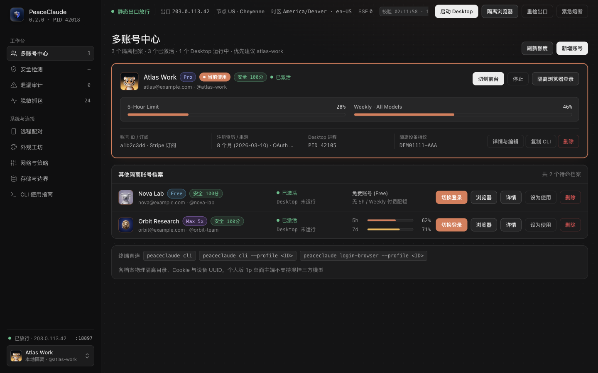

Fail-Closed Egress Gate + pf
4-source parallel IP probe verifies your static node. On any IP drift or manual lock, the gateway returns hard 503, severs active streams, and drops direct IPv4/IPv6/UDP via pfctl.
Ditch the 8 GB Linux VM without risking naked proxy leaks. PeaceClaude wraps Claude Desktop, Claude Code CLI, and your native Arc & Chrome browsers in a Fail-Closed static-IP gate, synced US timezone/locale, and verified 2/100 anti-fingerprint shield.
PeaceClaude enforces deterministic network fail-closing and browser/CLI fingerprint alignment at the OS user-space + pf kernel boundary — keeping macOS instant, silent, and battery-friendly.
From kernel packet anchors to browser MV3 Content Scripts, every surface stays aligned with your active profile.
4-source parallel IP probe verifies your static node. On any IP drift or manual lock, the gateway returns hard 503, severs active streams, and drops direct IPv4/IPv6/UDP via pfctl.
Select Arc, Chrome, Brave, or Edge in the console: pairs Claude-only PAC routing with a domain-scoped MV3 extension achieving 2/100 LOW RISK without touching Slack, Lark, or work tabs.
Separate config, Desktop user-data-dir, cookies, and UUID per account. Detects Free vs Pro/Max automatically, routes claude:// OAuth callbacks strictly to the active window, and guards native Claude.app launches.
Verifies remote SOCKS5 DNS, --disable-quic, WebRTC UDP suppression, and host socket scans. Smart 3-way diagnose separates transient network drops from real auth expiration before you touch Sign Out.
Issue 120-second ISO-18004 SVG QR pairing passes backed by SHA-256 Bearer tokens to check quotas, swap active profiles, or lock egress from your phone with zero cloud relay servers.
Local packet capture and Split-IP leak logs strip Authorization headers, Cookies, and OAuth tokens before hitting 0600 disk files, auto-pruned on a rolling 30-day schedule.
Built with zero external frontend frameworks. Inspect real sanitized captures from PeaceClaude v0.2.0 below.

Multi-account Hero cockpit with Pro 5h/Weekly telemetry bars, Free tier status, per-account security scores, and standby roster.
pf IPv4/IPv6/UDP killswitch, isolated profile paths, host env scrubbing, and domain-scoped timezone/locale/CJK-font alignment.# 1. Download PeaceClaude-v0.2.0-macos-universal.dmg from GitHub Releases
# 2. Drag PeaceClaude.app into Applications & run Install-PeaceClaude-CLI.command
# 3. Verify checksum & clear ad-hoc quarantine if prompted:
xattr -dr com.apple.quarantine /Applications/PeaceClaude.app